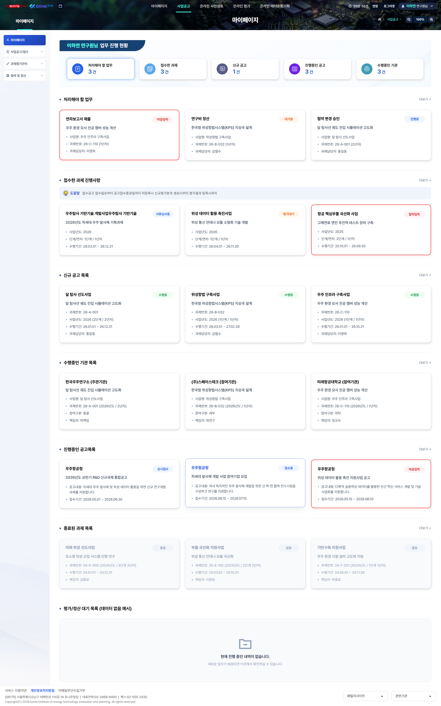
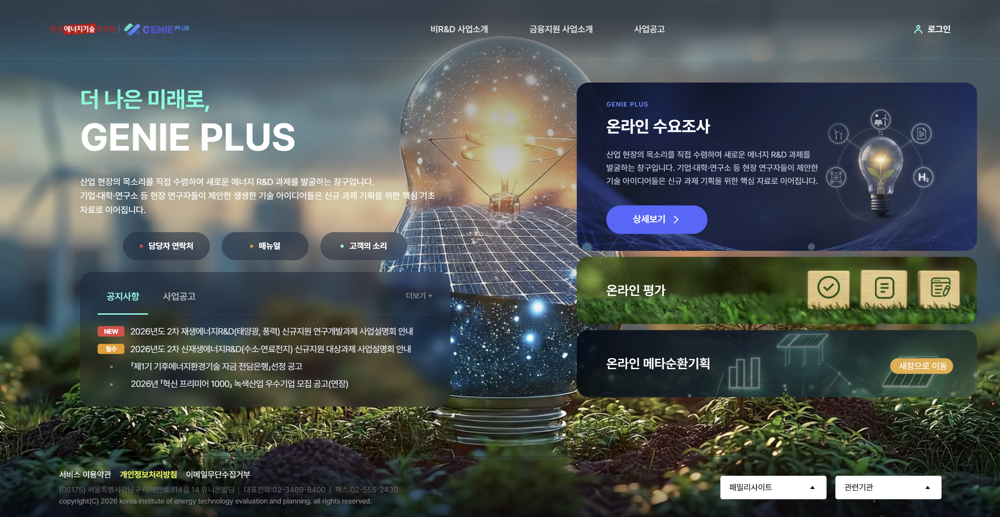
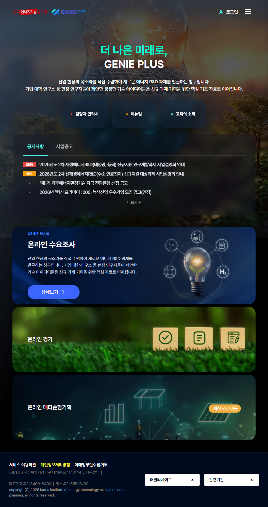
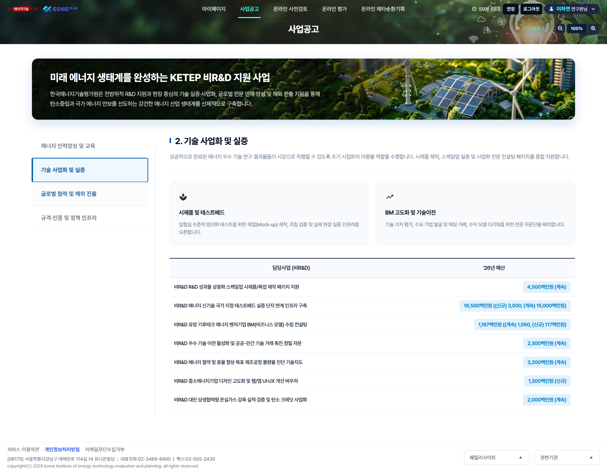
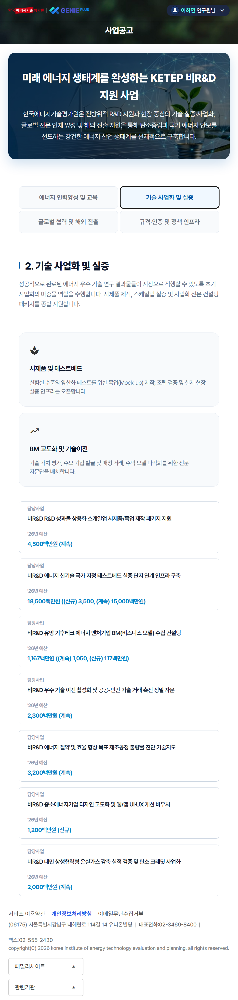
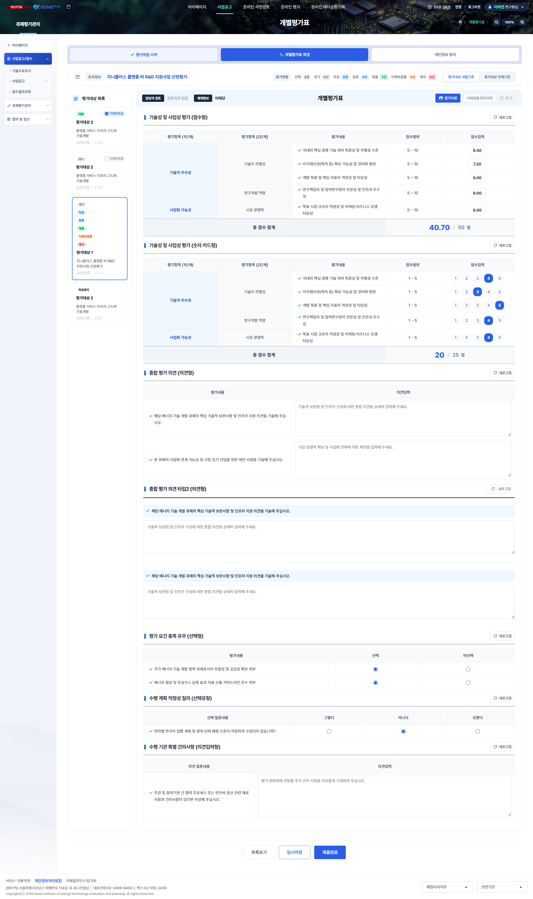

MY PAGE
연구자 중심 맞춤형 대시보드
처리할 업무 및 신청 과제 현황을 상단 대시보드 형태로 수치화하고 신규 공고, 수행기관, 진행 중인 과제 목록을 카드형 레이아웃으로 구조화하여 탐색 동선을 최적화했습니다.


기존 '전구' 모티브를 친환경 미래 에너지 기술로 재해석했습니다. 빛, 자연, 기술이 입체적으로 어우러지는 배경 연출과 직관적인 대시보드형 카드를 결합하여 몰입감 높은 사용자 경험(UX)을 선사합니다.
방대한 비R&D 지원 사업 정보를 체계적으로 분류했습니다. 주요 추진 과제를 직관적인 카드형으로 배치하고 예산 수치를 시각적 태그 스타일로 정돈하여 연구자와 기업 사용자의 탐색 편의성을 극대화했습니다.

스마트폰, 태블릿 등 기기별 해상도와 다양한 모바일 브라우저 환경에 완벽히 대응합니다. 화면 크기에 맞춰 핵심 정보가 자연스럽게 재배치되어 언제 어디서나 최상의 시독성과 편안한 탐색 경험을 제공합니다.

연구자의 과제 관리 편의성과 평가위원의 심사 효율성을 극대화하도록 설계된 핵심 시스템입니다.
(보안 정책 준수를 위해 화면 내 일부 정보는 더미 데이터로 구성되었습니다.)

처리할 업무 및 신청 과제 현황을 상단 대시보드 형태로 수치화하고 신규 공고, 수행기관, 진행 중인 과제 목록을 카드형 레이아웃으로 구조화하여 탐색 동선을 최적화했습니다.

좌측의 평가 대상 목록과 우측의 점수 입력 폼을 분할 배치하고, 정량·정성 평가 항목을 직관적인 데이터 테이블 형태로 구성하여 평가위원이 혼선 없이 심사를 진행할 수 있습니다.